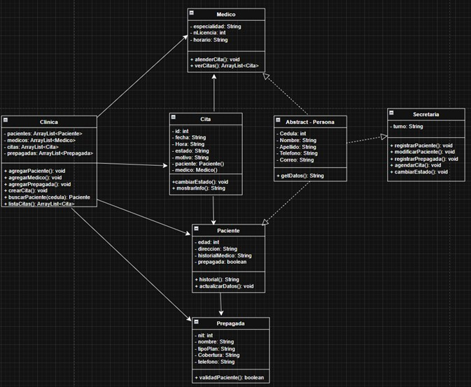
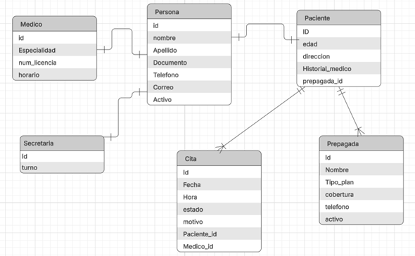

Sistema de Gestión de Citas Médicas
Mediante una entrevista y visualizacion del proceso de guardado de informacion, pudimos verificar los siguientes riesgos:
Estos problemas pueden llegar a afectar la eficiencia y calidad del servicio médico.
El sistema tiene como objetivo principal optimizar los procesos clínicos mediante una herramienta tecnológica que reduce errores humanos y mejora el acceso a la información, tanto de pacientes, como secretarias, medicos y/o citas medicas.
Garantizan que el usuario final interactúe con una plataforma intuitiva y facil de usar.
Gracias a una arquitectura por capas, mantenemos el código perfectamente organizado, desacoplado y fácil de mantener o actualizar.
Garantiza la integridad de los datos antes de ser almacenados en la base de datos mediante controles:
Estructura relacional y de clases diseñada para el esquema de la base de datos y funcionamiento del sistema.

